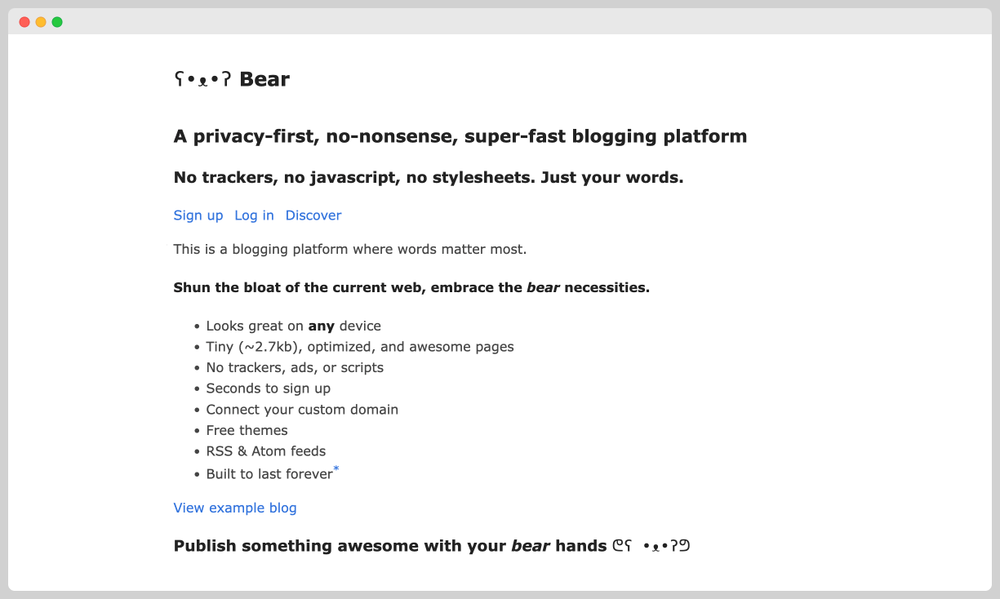
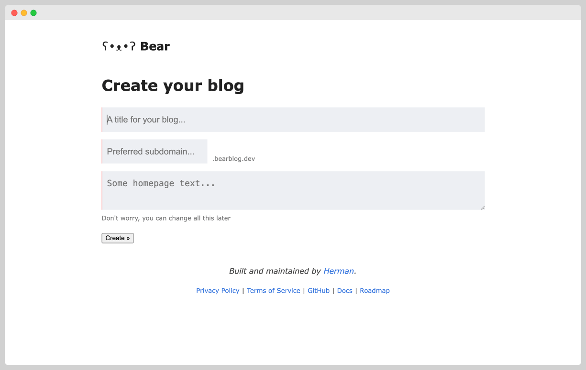
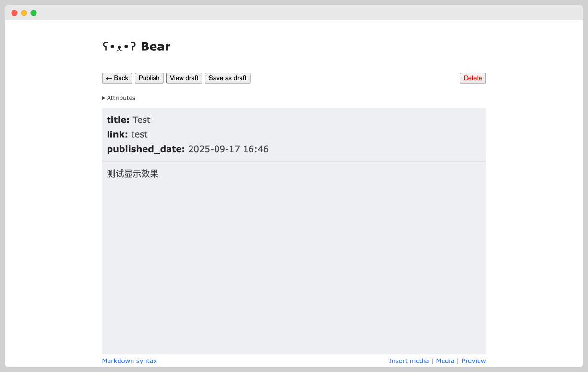
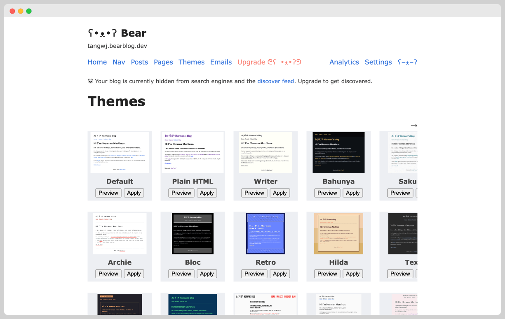

意外遇见了完美补齐我需求的 Markdown 编辑器

Bear Blog，它本是一个极简博客平台。
我是如何遇见并使用它的
最初对 Bear Blog 有印象，是因为在读到一些博客时，我发现他们虽然是不同的网站，但都有一个相同的图标 — 一个小熊表情的颜文字。点击小熊表情，它带我来到了官网，于是我知道了这是一个写博客的平台，但我已经有自己的独立博客网站了，所以就没有深入研究，后来逐渐淡忘。
直到今年九月份，公众号后台有个读者问我的个人网站是怎么搭建的，这是一个复杂的话题，我想如果没有设计和开发经验的话，还是最好找现成的建站平台，于是就想到了 Bear Blog 。
简单询问了一下 DeepSeek 如何使用 Bear Blog ，我立马就上手注册了自己的网站，想测试一下它的可用性到底如何，结果很惊喜。
对我来说，它的关键在于多端同步。用了多年 Sublime Text 和 Typora 作为主力 Markdown 编辑器，它们各有各的优点，但问题是都不能在手机上使用。Bear Blog 就解决了这个问题，它在浏览器上运行，所以不挑系统和设备，而我恰巧用的设备很多，iPhone、iPad、Mac和Windows，现在我只需要在浏览器上登录账号，就可以编辑同一篇文章。
作为轻量化的 Markdown 编辑器，Bear Blog 足够用了。现在我主要还是用它做文字类的编辑，尤其我经常在通勤路上和上班休息的间隙使用它，这篇文章的初稿就是在手机上用它写的。
快速上手三步走
创建网站 → 发布文章 → 个性化设置。
第一步：创建属于你的博客网站

注册即创建，整个过程甚至不需要一分钟。
- 访问 Bearblog 官网：https://bearblog.dev/
- 点击页面上的 "Sign UP" 。
- 在注册页面，根据指引填写网站信息（标题、域名、首页描述）、账号信息（邮箱、密码）
- 点击**"Create"** ，你的博客网站就立刻创建成功并上线了。
第二步：发布你的第一篇文章

创建博客后，你将进入个人 仪表盘 (Dashboard)，这里是你管理所有内容的地方。
- 在仪表盘中，找到并点击 "New post" 按钮。
- 你会看到一个极其简洁的写作界面：一个用于填写 标题 (Title) 的输入框，以及下方用于撰写 正文 的大片区域。
- 在正文区域，你可以使用 Markdown 语法来设置标题、列表、粗体、斜体和链接等格式。
- 写完后，点击页面顶部的 "Publish" 按钮。恭喜你，你的第一篇文章已经成功发布！
（可选）第三步：个性化你的博客

虽然 Bear Blog 崇尚极简，但它也提供了一些基础的个性化选项，让你的博客更具个人风格。
在仪表盘中，找到 "Themes" 标签页。在这里，你可以：
- 修改博客主题：这里预设了几十种样式精美的主题。
- 添加自定义 CSS：如果你懂一些 CSS，可以添加代码来调整字体、颜色等样式，进一步打造独特的视觉风格。
在 "Settings" 标签页，你也可以：
- 修改博客标题和域名。
极简的代价
作为一个极简的博客平台，它也是有一些限制的。它不能实现复杂的布局，也没有复杂的交互，所以更适合做纯文字内容的博客。
免费版不支持插入图片。一个迂回的方式是把图片上传到第三方图床，然后在文章中以Markdown 语法引用图片链接。
不同于 Wordpress 等建站平台，他们有众多的插件可以实现功能扩展。
如果你觉得这些都不是问题，现在，开始你的极简写作之旅吧！